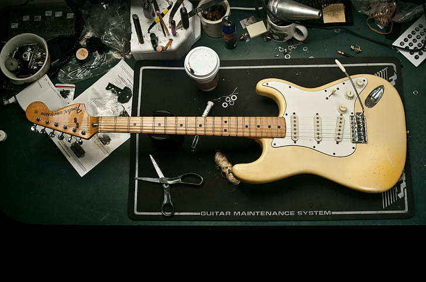
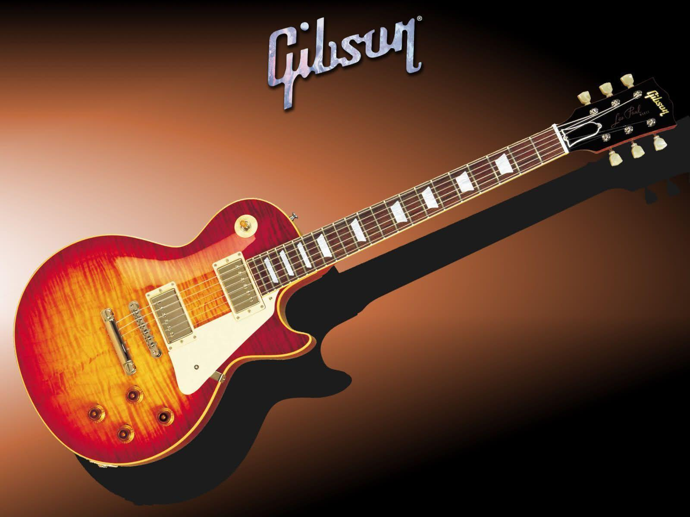
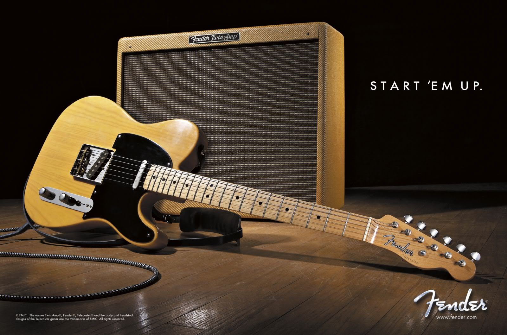
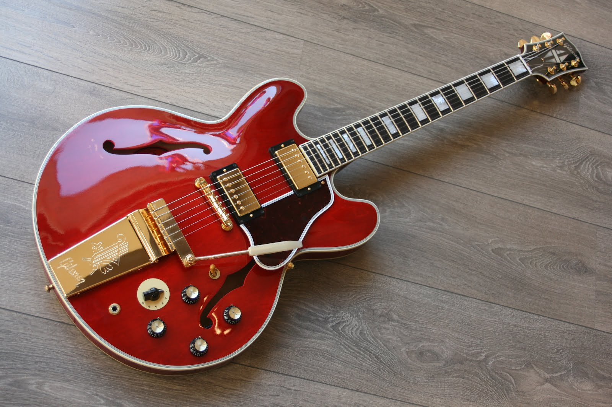
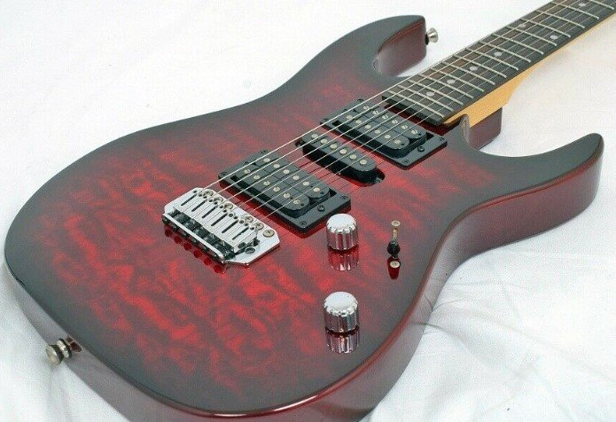

Voto: 8
La prima tipologia di chitarra elettrica, probabilmente anche la più importante in assoluto, non poteva che essere la Stratocaster. Se chiedeste a qualcuno che non è avvezzo agli strumenti musicali di disegnare una chitarra elettrica, nella maggior parte dei casi sarà proprio una Stratocaster.
La Stratocaster è, infatti, lo strumento che, a partire dagli anni ‘50, ha rivoluzionato il modo di concepire la musica e lo stesso concetto di chitarra elettrica. Non si tratta solamente di una questione rilevante dal punto di vista storico o di prestigio del brand, in quanto tutte le Strato Style hanno un suono indiscutibile, iconico e riconoscibile.
Ciò che rende davvero unica una Stratocaster è l’insieme di alcuni fattori come il suono dei single coil, la scala lunga e il manico avvitato. La Strato non è semplice da suonare perché è diversa da tutte le altre, bisogna avere le giuste intenzioni e la capacità per ottenere il meglio da questa chitarra.
Onnipresente
Voto: 9
Se non è la Strato, siamo certi che anche il Les Paul sia uno dei più conosciuti al mondo. Si tratta di un’altra chitarra che ha segnato la storia e che ha determinato cambiamenti importanti nella musica moderna e, in special modo, nel rock.
A rappresentare la categoria abbiamo la Les Paul ma, in realtà, facciamo riferimento a tutte le chitarre che hanno un corpo in mogano, doppio humbucker, scala corta e manico non avvitato. La Strato e la Les Paul sono due strumenti completamente diversi, anche dal punto di vista del playing.
L’aggressività della Les Paul è di un altro livello, un tipo di chitarra che anche con il gain al minimo è in grado di sprigionare un vero e proprio muro di suono. Tuttavia, l’altra faccia della medaglia è che è equipaggiata con pickup non troppo versatili.
Prestigiosa
Voto: 7.5
Nella collezione di qualsiasi chitarrista, non può non mancare un altro modello iconico: la Telecaster. Negli anni ‘50, la Tele è stata la prima chitarra ad essere prodotta e venduta per le masse. Tuttavia, non è solo questo a renderlo uno strumento unico e apprezzato da migliaia di chitarristi in tutto il mondo.
La Tele, come la Strato e la Les Paul, conserva ancora a distanza di anni un’identità molto precisa che si adegua alla perfezione alla musica moderna. Tuttavia, la Telecaster non è una chitarra che consigliamo a chi inizia a suonare perché potrebbe potrebbe scoraggiare i novelli chitarristi.
Infatti, nonostante condivida alcune caratteristiche della Strato come il manico avvitato, la scala lunga e i single coil, la Tele è uno strumento molto diverso che ha delle caratteristiche timbriche uniche e che necessita di uno style di playing differente. Nel complesso, potrebbe sembrare una chitarra elettrica dal look e dal suono un po’ primitivo ma assolutamente originali.
Versatile
Voto: 8.5
Il quarto tipo di chitarra elettrica che dovrebbe essere incluso in una collezione che si rispetti è il modello “Semiacustica” oppure completamente “Hollow-body”. Suonare con una chitarra semiacustica, dopo anni su solid body come quelle appena analizzate, è un’esperienza completamente diversa.
Si tratta di strumenti che occupano una zona grigia, tra Les Paul e Stratocaster, sono versatili ed hanno un’anima differente rispetto alle solid body. Ecco perché, insieme a Strato, Tele e Les Paul Style, le semiacustiche rappresentano delle chitarre uniche da includere nella propria collezione e che permettono di accedere ad un range di suoni ancora più ampio.
Elegante
Voto: 7
La quinta e ultima chitarra, invece, è uno strumento dalle caratteristiche particolari: manico super sottile, tastiera con radius molto piatto, humbucker aggressivo al ponte, floyd rose. Caratteristiche tipiche delle chitarre moderne definite "SuperStrat".
Moltissimi suoni si possono ottenere con le prime 4 chitarre di questa guida. Invece, nessuna delle opzioni viste è in grado di avere un suono così aggressivo come questa tipologia di chitarre elettriche.
Aggressiva
